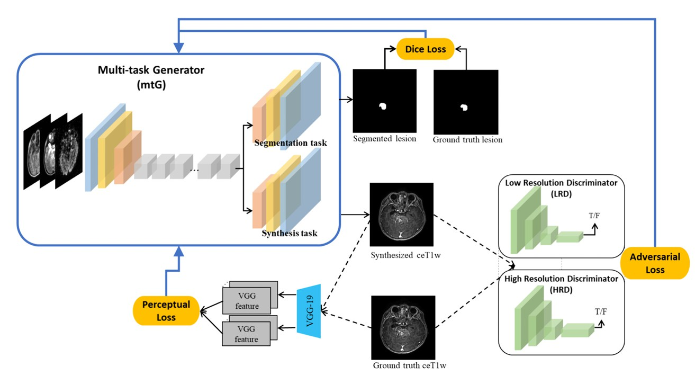
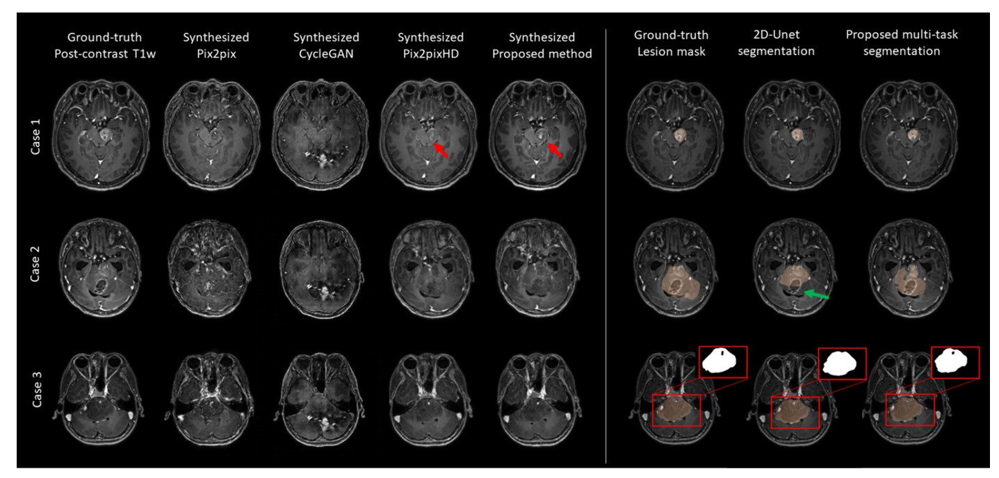
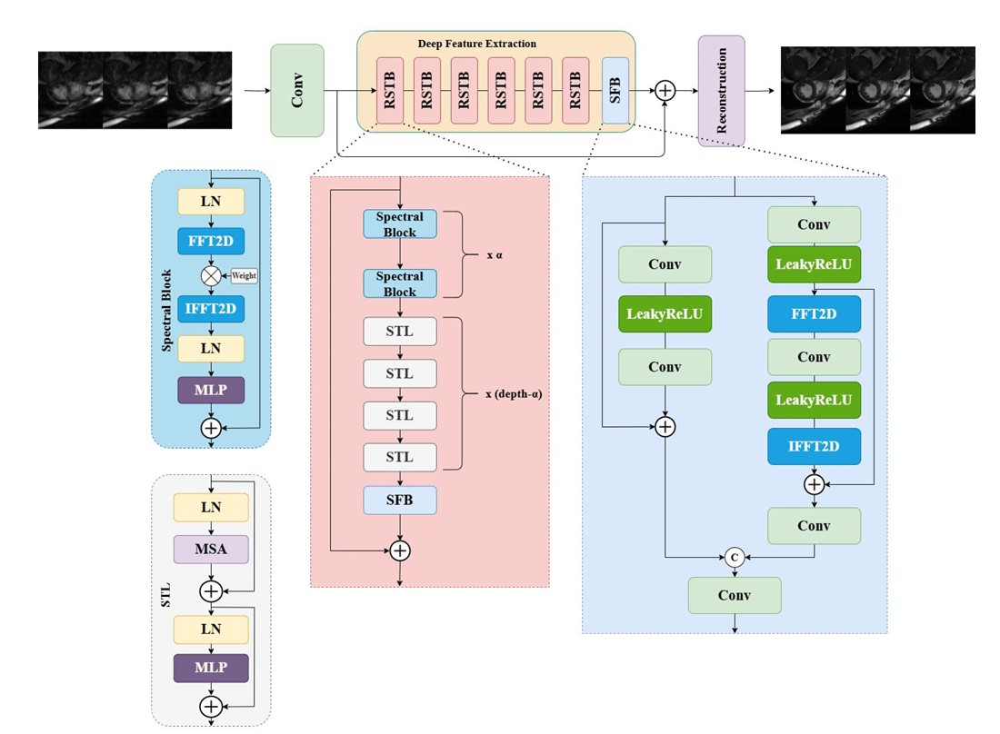
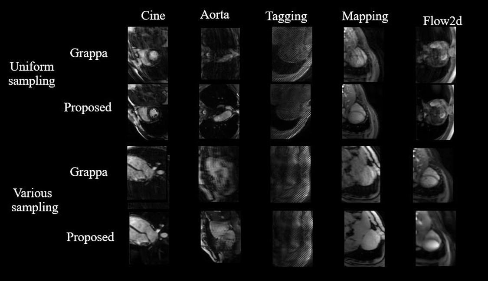
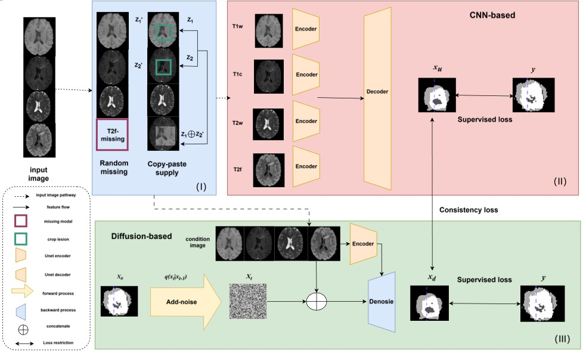
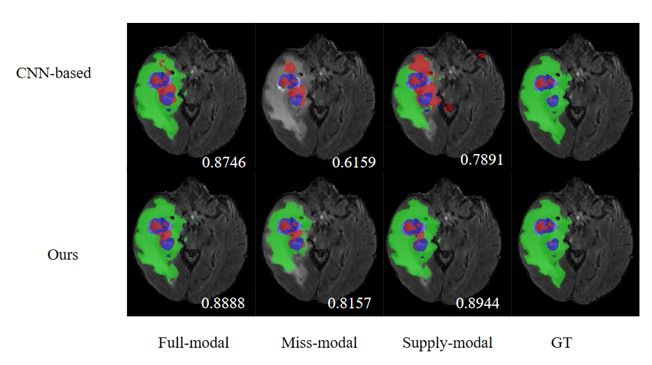

About Me

I am a master's student.
I specialize in mathematics and applied mathematics, machine learning, computer vision, medical image processing, tumor segmentation, image fusion, and 3D cardiac reconstruction.
Medical image analysis, computer vision, and machine learning research.
I am a master's student.
I specialize in mathematics and applied mathematics, machine learning, computer vision, medical image processing, tumor segmentation, image fusion, and 3D cardiac reconstruction.
The diagnosis of brainstem gliomas is a high-cost task in clinical practice, and acquiring high-quality diagnostic image data can be difficult. Fast image generation, accurate lesion segmentation, and robust segmentation under incomplete data conditions are important for clinical diagnosis.


Multi-contrast cardiac magnetic resonance imaging (CMR) provides valuable information for assessing cardiac structure and function, but acquiring multiple contrast-weighted images increases scan time and patient discomfort. This project studies efficient reconstruction methods for accelerated and high-quality multi-contrast CMR imaging.


Brain tumor segmentation plays a critical role in clinical diagnosis and treatment. This project explores diffusion-guided multi-modal segmentation for MRI cases with missing or unavailable imaging modalities, improving model robustness and segmentation quality under incomplete data conditions.


This study aims to generate post-contrast MR images while reducing exposure to gadolinium-based contrast agents for brainstem glioma detection. It also delineates BSG lesions and provides high-resolution contrast information.
Read MoreEmail: hyx@123.com